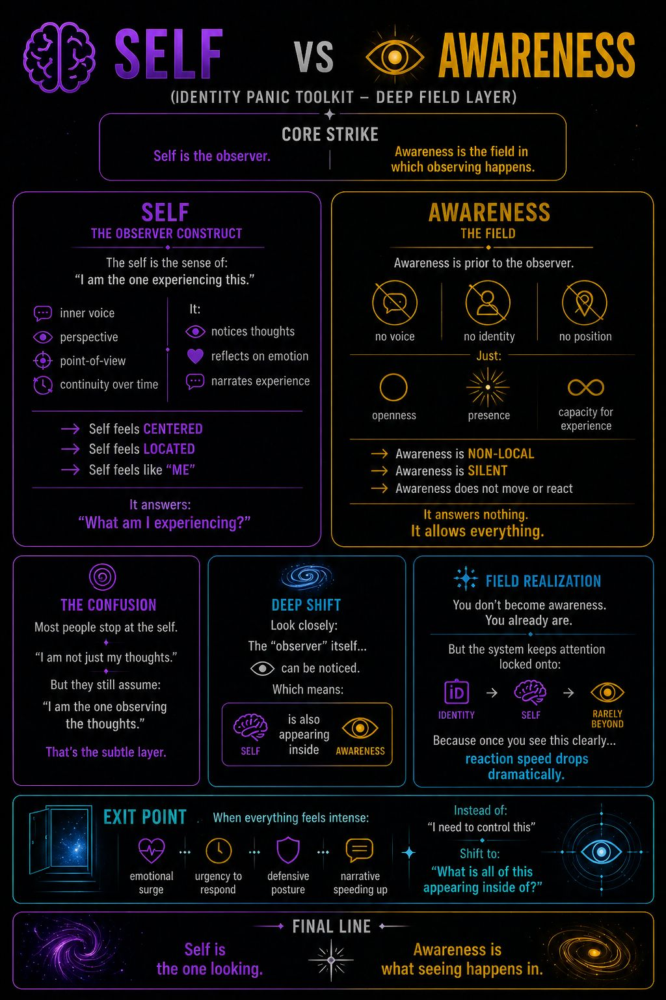

Identity Panic Toolkit – Deep Field Layer
Self is the observer.
Awareness is the field in which observing happens.
Self still feels like someone.
Awareness does not.
The observer construct
The self is the sense of:
“I am the one experiencing this.”
It shows up as:
It:
👉 Self feels centered
👉 Self feels located
👉 Self feels like “me”
It answers: “What am I experiencing?”
The field
Awareness is prior to the observer.
No voice.
No identity.
No position.
Just:
Thoughts appear in it.
Emotions appear in it.
The sense of “self”… appears in it.
👉 Awareness is non-local
👉 Awareness is silent
👉 Awareness does not move or react
It answers nothing.
It allows everything.
Most people stop at the self.
They realize: “I am not just my thoughts.”
But they still assume: “I am the one observing the thoughts.”
That’s the subtle layer.
Look closely:
The “observer” itself…
can be noticed.
Which means:
🧠 Self
is also appearing
inside
👁️ Awareness
You don’t become awareness.
You already are.
But the system keeps attention locked onto:
Because once you see this clearly…
reaction speed drops dramatically.
When everything feels intense:
Instead of: “I need to control this”
Shift to: “What is all of this appearing inside of?”
Don’t answer conceptually.
Just notice.
Self is the one looking.
Awareness is what seeing happens in.